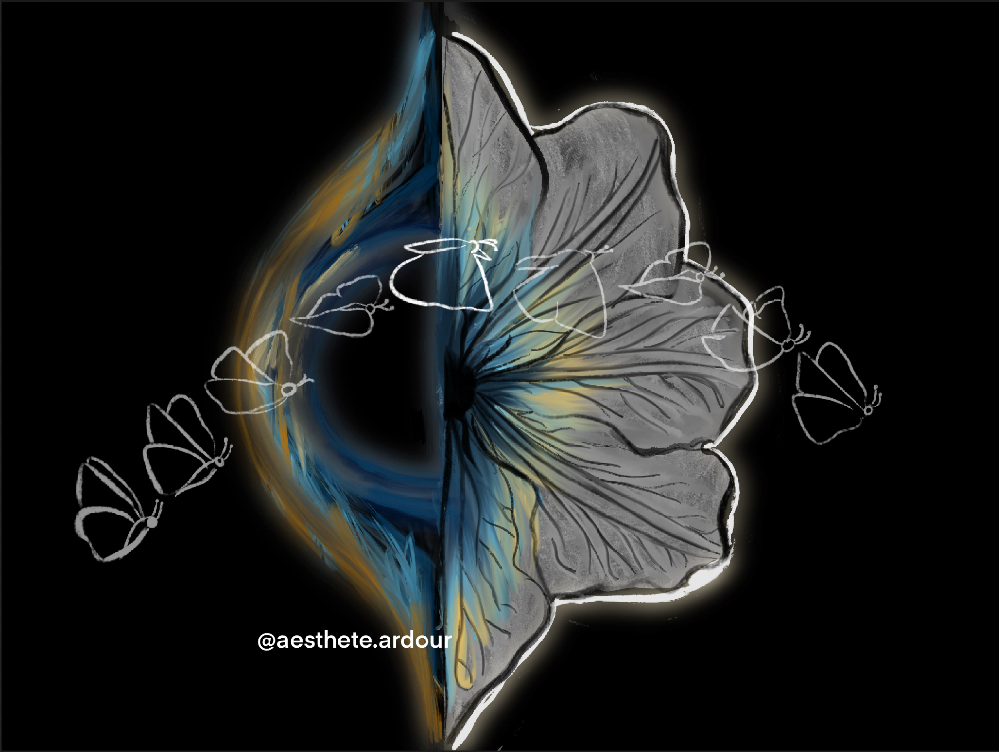

This artwork is inspired form the " butterfly effect " which basically means that "everything
affects everything", that small variances in the initial conditions could have profoundly and widely
divergent effects on any given outcome, many cultures use this to emphasize the outsize significance
of a minute occurrence where people say that "a flap in a butterfly's wings in brazil can set off a
tornado in Texas" . So to depict this l've shown a black hole on one side of the drawing and a
flower on the other, and a butterfly flying across the picture, to portray that no matter what we do
in life, even if we take a left instead of a right it has a prominent effect on our life.
Software used: Procreate